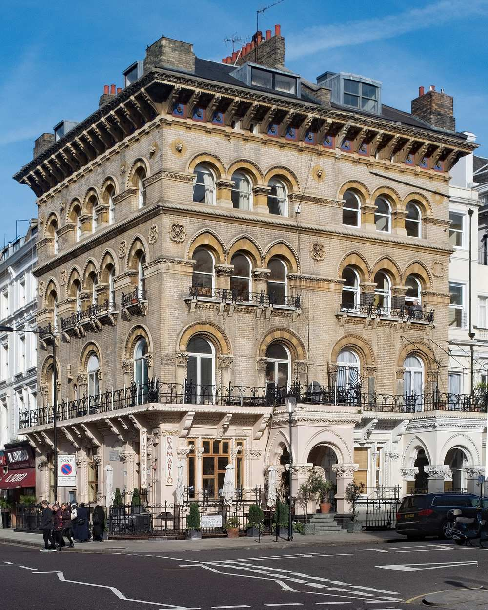
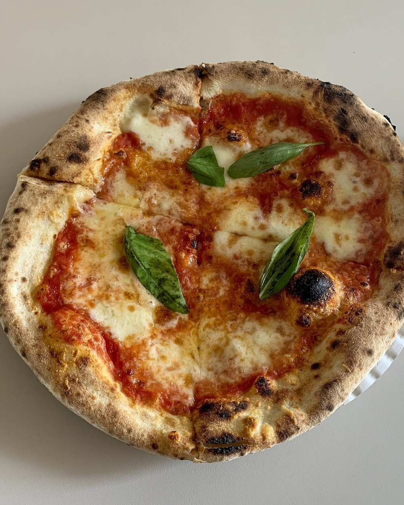
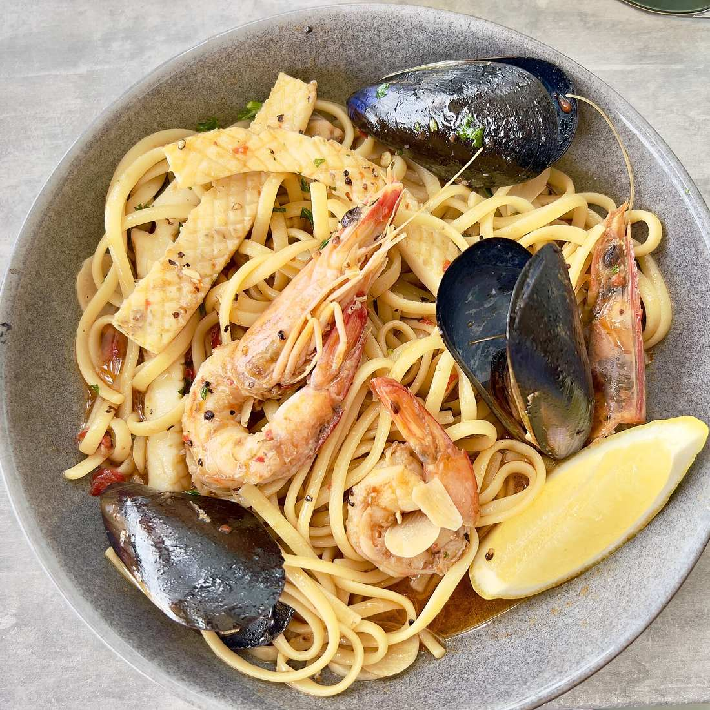
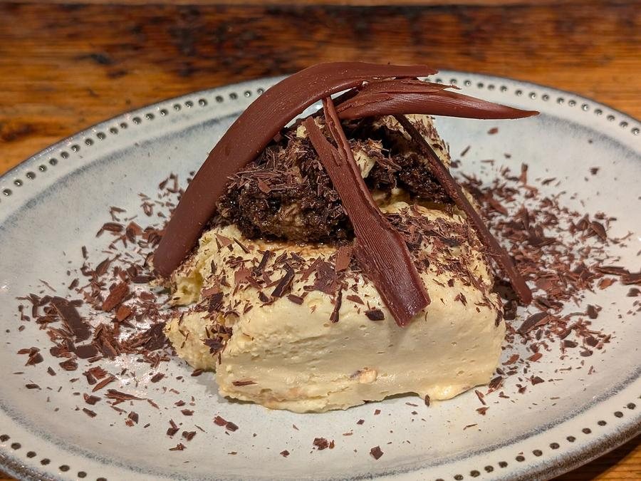

Pizzeria · Ristorante · Gloucester Road
Da Mario
Thin-crust pizza and trattoria classics in a Venetian-Gothic house, between Kensington Gardens and the museums.
Open every day from noon
La casa
A family trattoria with a long Kensington story.
Da Mario describes itself as one of London’s oldest family-owned restaurants, trading on Gloucester Road for more than fifty years. The room is warm and lively, with an Italian team, seasonal decorations and specials that change with the market.
By the family’s own account, it was also a favourite of Diana, Princess of Wales, who dined here many times. Today it welcomes neighbours, families and visitors to the museums alike, across two floors and an outside terrace.
- 50+years on Gloucester Road
- 2floors and a terrace
- 7days a week, noon till late
La cucina
Le pizze
A selection from recently published menu listings. Dishes, specials and prices change; Da Mario’s current menu would be set here.

Margherita
San Marzano tomato, mozzarella, Parmigiano, basil
Bufalina
San Marzano tomato, basil, buffalo mozzarella
Marinara
San Marzano tomato, garlic, anchovies, oregano, olive oil
Napoletana
Tomato, mozzarella, olives, capers, anchovies, basil
Quattro formaggi
Mozzarella, fontina, goat’s cheese, Parmesan, basil
Calabrese
Spicy tomato, spianata salami, ’nduja, fontina, peppers
Salsiccia e friarielli
Italian sausage, fior di latte, cherry tomatoes, gorgonzola dolce, friarielli
Frutti di mare
Octopus, prawns, mussels, squid, king prawns, olives, parsley, garlic
Regina
Cherry tomatoes, aged Parma ham, mozzarella, rocket, Parmesan
Siciliana
Aubergine, fontina, goat’s cheese, basil

E poi
Pasta, seafood & il dolce
Alongside the pizze: pasta (the seafood pasta is a house favourite), salads, fish and meat dishes, daily specials and tiramisu.

Visit
15 Gloucester Road
Kensington, London SW7 4PP
Open daily, noon – 11.30pm
Facebook · enquiries@damario.co.uk
| Monday | noon – 11.30pm |
|---|---|
| Tuesday | noon – 11.30pm |
| Wednesday | noon – 11.30pm |
| Thursday | noon – 11.30pm |
| Friday | noon – 11.30pm |
| Saturday | noon – 11.30pm |
| Sunday | noon – 11.30pm |